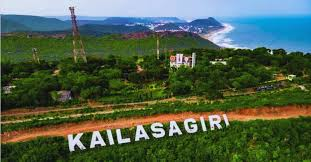
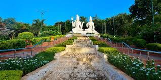
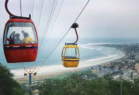
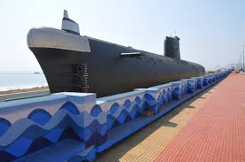
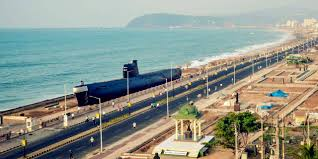
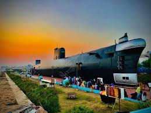
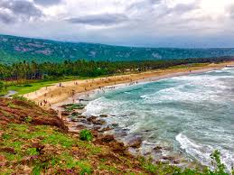
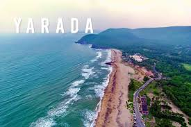
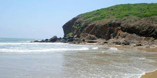
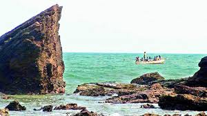

Ramakrishna (RK) Beach, popularly known as RK Beach, is a popular beach located on the east coast of the Bay of Bengal in Visakhapatnam, Andhra Pradesh. It's named after the Ramakrishna Mission ashram situated nearby. The beach is known for its promenade, which is great for walking, and its views of the Bay of Bengal. While swimming is officially prohibited due to pollution, the beach offers various attractions like the Submarine Museum, Visakha Museum, and the Sri Ramakrishna Mission Ashram.
Kailasagiri



Kailasagiri is a hilltop park in the city of Visakhapatnam in the Indian state of Andhra Pradesh.[3] The park was developed by the Visakhapatnam Metropolitan Region Development Authority (VMRDA) and comprises 380 acres (150 ha) of land covered with flora and tropical trees. The hill, at 173 metres (568 ft), overlooks the city of Visakhapatnam.
The Government of Andhra Pradesh awarded Kailasagiri as its "Best Tourist Spot" in 2003.[citation needed] On average, around three hundred thousand Indian and foreign tourists visit the park every year. To protect the environment, VMRDA has declared the hill a plastic-free zone.[3] A cable car connects to the top of the hill, the first of its kind in Andhra Pradesh. [4] Kailasagiri is located around 10 km from the Visakhapatnam Railway Station and around 8 km from Visakhapatnam Dwaraka Bus Station.
Submarine Museum



It is another landmark in the tourism chapters of Visakhapatnam. The first of its kind in the whole south Asia. INS Kurusura Submarine is a Soviet built-I-641 class Submarine was inducted into the Indian Navy on 18, December 1969 and the same was decommissioned on 28, February 2001 after 31 years of glorious service to the nation. The complete Submarine including the weapon package was hauled-up from Sea to land and positioned on a concrete foundation at Gajapathi Raju Marg, Ramakrishna Beach Road, Visakhapatnam. For setting-up the Submarine Museum, a sum around Rs.6.00 Crores was spent in technical association with Naval-ship Design and Research Center. The length of Submarine is 91.3 m. while the breadth is 8.00 m.
Yarada Beach




Yarada Beach in Visakhapatnam (Vizag) is a picturesque beach located approximately 15 kilometers from the city, known for its golden sands, clear waters, and peaceful atmosphere. It's a relatively less crowded beach compared to other popular spots like Rishikonda Beach, making it a great choice for a relaxing day out.